The 12 Leverage Points
Agentic success is not a lucky prompt. It is a stack of visible levers that let a brilliant but blind agent see, navigate, act, verify, and improve.
Mastery promise. By the end, you will name all twelve leverage points in two families, diagnose a silent production-shaped failure, make the agent observe and repair it, trace a type through five real files, close a test loop, and measure progress with size, attempts, streak, and presence.
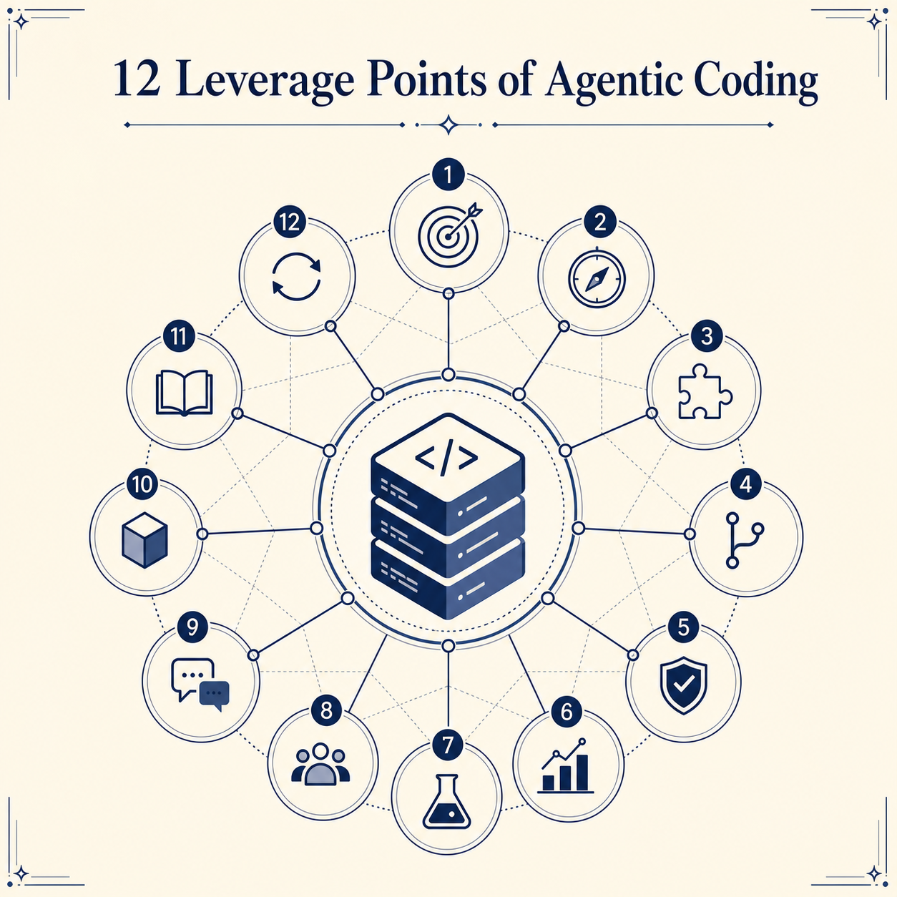
Stop blaming the agent; inspect its leverage
A browser displays a precise SQLite error. The server terminal says nothing. You know the bug exists. The agent does not. Is that an intelligence failure—or an engineering failure?
The TAC-2 repository turns that question into a controlled experiment. It is a small natural-language-to-SQL application: a Vite/TypeScript client, a FastAPI server, Pydantic models, SQLite conversion, tests, local API documentation, reusable commands, and a 749-line specification. One sample file, orders_(32).csv, carries a planted table-name problem. In the committed state, the browser can show the failure while the server prints no diagnostic trace. The agent begins every fresh session without the visual context you have.
Dan does not solve the bug when he first sees it. He improves the system that communicates with the agent. Then he lets the agent diagnose the same bug from its own observations. That sequence is the chapter in miniature: identify a missing leverage point, install it, close the loop, and measure whether human effort falls.
What you are training
- RecallName the four in-agent and eight through-agent leverage points without a cue.
- DiagnosisMap a failed run to missing visibility, structure, validation, planning, or reusable workflow.
- OperationMake the real TAC-2 server observable and let an agent fix the planted failure.
- MeasurementUse size, attempts, streak, and presence to separate progress from a lucky run.
Lab rule
Type no application code by hand and paste no error message into the agent. Your job is to create conditions in which the agent can observe, act, and validate for itself. Use a disposable standalone clone so the shipped prompts see the intended repository boundary.
A four-pass diagnostic before you re-prompt
The twelve points become useful when they change the next action. A failed run often tempts you to add more prose to the prompt because the prompt is the surface directly in front of you. Dan’s map asks you to pause. First describe the failure as an observable symptom. Then inspect the active agent, inspect what the codebase can communicate through it, and finally inspect whether the workflow can repeat without you. This sequence keeps a missing log from masquerading as a weak model and keeps a missing test from masquerading as a successful implementation.
Consider four versions of “the CSV task failed.” In the first, the agent never saw server.py or the sample filename: context is suspect. In the second, it saw the repository but the process ran in a different terminal: standard out is suspect. In the third, it wrote a sanitizer and stopped without exercising the bad filename: tests and review evidence are suspect. In the fourth, the repair works but you manually reconstruct the same startup and diagnosis sequence next week: the template and ADW end of the ladder is suspect. One English sentence describes four different systems. The leverage map prevents one generic re-prompt from hiding those distinctions.
The repository evidence ledger
This chapter stays unusually concrete because every major lever has an artifact you can point to. The in-agent four are visible in the active Claude Code session, its system-provided tools, the user instruction, and the files and outputs loaded into context. The eight through-agent levers live around that session. The committed server’s silence demonstrates missing stdout. Pydantic and TypeScript declarations demonstrate type contracts. The README and two quickstarts demonstrate internal and external documentation. The mirrored backend suite demonstrates tests. The client/server split and focused core modules demonstrate architecture. The long specification demonstrates a plan. Three command files demonstrate templates. Empty adws/ and agents/ directories demonstrate the destination without falsely claiming that the highest abstraction has already been built.
| Lever | Repository evidence | Diagnostic question |
|---|---|---|
| Context | /prime, tracked-file list, README, conversation, tool observations | Did the fresh session receive the files and state needed to begin? |
| Model | The configured language model in the active agent and period model pins in the demo app | After the task is possible, is the selected reasoning capacity appropriate? |
| Prompt | The user request, the 749-line plan, and committed command markdown | Does the instruction name outcome, constraints, and evidence? |
| Tools | /tools output plus .claude/settings.json | Can the agent perform and observe every required transition? |
| Standard out | Silent committed handlers versus the agent-produced logging diff | Does runtime truth enter a stream the agent can read? |
| Types | DatabaseSchemaResponse across backend, frontend, client, and spec | Can one precise identifier reveal the information flow? |
| Documentation | README.md and ai_docs/ | Is project and third-party knowledge local, explicit, and discoverable? |
| Tests | app/server/tests/core/ and its fixtures | Can the agent prove the change and correct a mistake itself? |
| Architecture | app/client, app/server/core, and mirrored tests | Does a directory or naming decision remove possibilities before search? |
| Plans | specs/init_nlq_to_sql_to_table.md | Is massive work communicated in a reviewable form? |
| Templates | install.md, prime.md, tools.md, and live-created start.md | Has a repeated successful prompt moved into repository memory? |
| ADWs | claude -p "/tools" as the seed; empty workflow directories as the destination | Is there actually prompt composition, wrapper code, and an autonomous trigger? |
Three disciplines that keep the map honest
Change one condition when diagnosing. If you add logs, change the model, expand the prompt, and write tests at once, a successful rerun teaches you almost nothing. The lab’s strongest comparison keeps the bug constant and changes its visibility. The same model that appeared helpless can diagnose the exact line once stdout reaches it. That is evidence for the leverage-point explanation.
Demand returned evidence. “I fixed it” is not an observation. A useful run returns the changed files, the relevant test results, and the behavioral check. In the course story, the proof chain includes a runtime trace, a diagnosis naming file_processor.py:26, an agent-produced sanitizer, an agent-run test suite, and a successful upload with a valid table. Each item closes a different uncertainty.
Keep the before-state distinct from the lesson’s after-state. The repository intentionally ships the failure. It has no committed stdout instrumentation, no sanitizer, no sanitizer test, and no start.md. Those are outputs students create through the agent. Preserving that distinction keeps the lab reproducible and prevents a code listing from claiming that an on-camera repair already existed.
Bet on the durable loop
Models and tool surfaces change. The engineering loop survives: plan, code, test, review, document.
1 · Hook
What remains when the favorite tool changes?
A career strategy built around one product screen is fragile. Dan’s opening bet is on the part of software work that keeps returning through every platform shift: the software development lifecycle. The phase-two version is deliberately compressed to five verbs. They are stable enough to organize the rest of the course and concrete enough to inspect in a repository.
2 · Picture
Five nodes, one repeatable path
1 · PlanDescribe the outcome and route.
2 · CodeCreate the implementation.
3 · TestGenerate concrete feedback.
4 · ReviewInspect evidence and risk.
5 · DocumentPreserve operating context.
The arrows matter. A plan that never reaches tests is not the system. Tests that never feed review are not a closed loop. Documentation becomes input to the next plan.
3 · Story
The repository already tells the whole lifecycle story
specs/init_nlq_to_sql_to_table.md is the plan. The app/ tree is the code. app/server/tests/ provides tests. The lesson’s live inspection performs review. README.md and ai_docs/ preserve internal and external knowledge. The twelve points will later attach to these nodes: plans strengthen planning, stdout strengthens review, tests strengthen validation, and documentation improves the next agent boot.
4 · Name
The phase-two SDLC
The goal is not to discard the lifecycle. It is to turn its nodes into programmable, observable structures and move the autonomy knob upward without throwing away engineering judgment.
5 · Worked example
Trace one change through all five nodes
The sanitizer change begins as a diagnosis and a tiny plan. The agent edits file_processor.py. A focused test covers parenthesized filenames, leading digits, and invalid-only names. The full suite supplies review evidence. A reusable /start command documents how to run the service inside the agent next time. What looked like “fix one SQL error” becomes a complete loop.
6 · You try
Point to the artifact
Without opening the chapter map, locate one TAC-2 file or directory for each lifecycle node. Then answer: which node is weakest in the committed broken state? A good answer names review/observability because the runtime failure does not reach an agent-readable stream.
7 · Fail / fix
A flat checklist hides the system
Failure: memorize twelve nouns and skip the lifecycle framing. Fix: attach each lever to the transition it improves. Standard out and tests create feedback. Architecture and types reduce navigation. Plans and templates improve delegation. ADWs trigger compositions. The map becomes causal instead of decorative.
8 · Current practice
The verbs transfer even when the interface does not
9 · Retrieval
Name the five steps and explain why Dan bets on them.
Reveal answer
Plan, code, test, review, document. The lifecycle is a durable aspect of engineering, so it survives churn in models, tools, and interfaces.
10 · Teach-back
One minute: explain to a teammate why agentic coding augments the SDLC rather than replacing it. Use the sanitizer change as your five-node example.
Adopt your agent’s perspective
Your agent is brilliant but blind. Anything outside its context and tools does not exist for the run.
1 · Hook
You can see the browser; the fresh agent cannot
A developer carries continuity almost unconsciously: yesterday’s diagnosis, an open browser tab, a terminal pane, the reason a filename looked suspicious. A new agent session carries none of it. Treating that session as if it remembers is not optimism; it is a malformed task.
2 · Picture
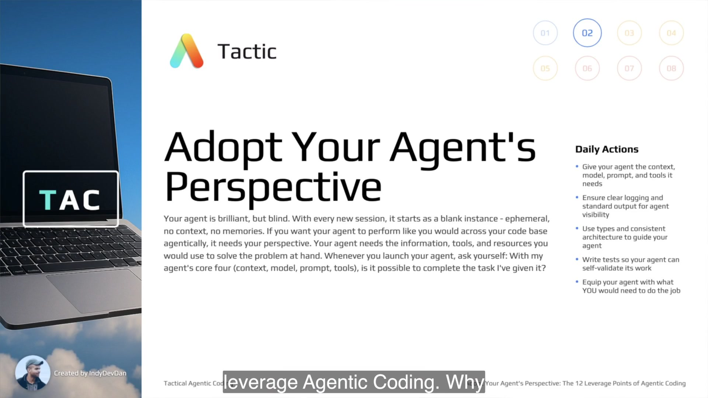
3 · Story
Prime is a deliberate antidote to ephemerality
The shipped .claude/commands/prime.md runs git ls-files, reads README.md, and asks for a codebase summary. It does not make the agent omniscient. It establishes a repeatable minimum starting state. Dan repeatedly opens fresh instances during the lesson so success cannot be attributed to hidden conversational memory.
4 · Name
This is not anthropomorphism. It is interface design. The perspective is the set of available observations, instructions, capabilities, structures, and feedback loops.
5 · Worked example
The same prompt is possible in one state and impossible in another
“Any issues with the server?” is useless when the server runs in an outside terminal and prints nothing. It becomes sufficient after error details reach stdout and the server runs inside the agent’s tool call. The model did not become smarter between runs. The task became possible.
6 · You try
Choose a task you recently gave an agent. Write four lines: context it could see, model/configuration, exact prompt, tools permitted. Then write one sentence answering the litmus question honestly. If “no,” improve the system before improving the prose.
7 · Fail / fix
Failure: assume the agent remembers a previous session or can see UI-only state. Fix: create a cold-start path: prime from repository truth, run relevant processes through observable tools, and place important facts in local files or command output.
8 · Current practice
9 · Retrieval
State Tactic #2, the motivating diagnosis, and the launch question.
Reveal answer
Adopt Your Agent’s Perspective; the agent is brilliant but blind; ask whether its context, model, prompt, and tools make the assigned task possible.
10 · Teach-back
Explain to a new teammate why a fresh agent changes the task even when the repository has not changed. Use /prime and the silent browser error as evidence.
Use the twelve as a diagnostic map
Four leverage points live in the agent. Eight external levers gain power by flowing through its context window.
1 · Hook
A failed one-shot is not “agent weirdness”
When a run fails, you need a better question than “should I retry?” The twelve points create a finite search space. Was the relevant code absent from context? Was the tool unavailable? Was runtime output silent? Did generic dictionaries erase a traceable type? Was there no test, plan, reusable command, or autonomous trigger?
2 · Picture
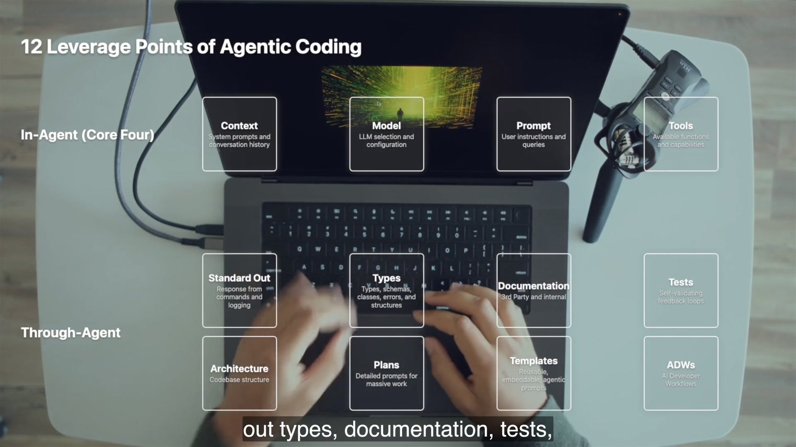
3 · Story
The demo walks the map instead of lecturing it
/install and /prime shape context and prompt. /tools exposes capabilities. The planted bug reveals missing stdout. DatabaseSchemaResponse reveals type flow. Client/server and mirrored tests reveal architecture. Local docs reduce lookup cost. Tests close validation. A 749-line spec, reusable slash commands, and claude -p form the abstraction ladder.
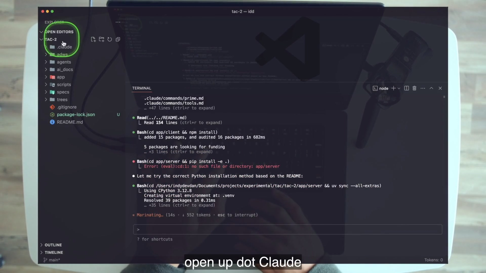
4 · Name
The first four travel with every run. The other eight are codebase and workflow structures that become useful when their information or feedback reaches the context window.
5 · Worked example
Diagnose before you reroll
6 · You try
Take the sentence “the agent failed to upload the CSV.” Produce three different diagnoses using the map: one missing context, one missing observation, and one missing validation loop. Notice how each diagnosis suggests a different intervention.
7 · Fail / fix
Failure: learn the list as trivia or treat all failures as prompt failures. Fix: name the observed symptom, select the smallest plausible lever, change one condition, and run again. This is an engineering ablation, not a mood.
8 · Current practice
9 · Retrieval
Name both families and all twelve members.
Reveal answer
In-agent: context, model, prompt, tools. Through-agent: standard out, types, documentation, tests, architecture, plans, templates, ADWs.
10 · Teach-back
Teach the map without reciting it. Start from three failures—lost agent, silent runtime, false success—and show how the twelve narrow the diagnosis.
Tools you cannot name are leverage you cannot use
Tool definitions are an API. Read the signatures before designing the workflow.
1 · Hook
Dan discovers a tiny parameter in the course-era Bash tool surface: timeout. That fact later lets the agent run the application long enough for a browser action to produce server output inside the same context. A parameter that looks like reference trivia becomes the hinge of the debugging loop.
2 · Picture
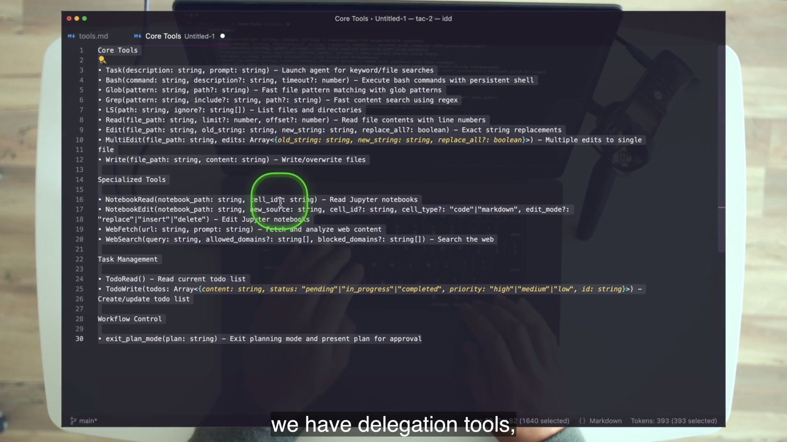
3 · Story
The two-line .claude/commands/tools.md asks the agent to list built-in, non-MCP development tools in TypeScript-function syntax. The result exposes Task(description, prompt), Bash(command, description?, timeout?), search tools, file mutation tools, web tools, notebook tools, task management, and workflow control. Dan reads it as an engineer reads a library interface.
4 · Name
5 · Worked example
The debugging run needs a long-lived process. Because Bash exposes a timeout, Dan can request sh ./scripts/start.sh with a 300-second tool timeout. The server’s stdout then enters the agent’s observation stream. The natural-language course prompt uses “300s”; do not mistake the comma in the spoken prompt for literal shell syntax.
6 · You try
For each visible tool in the frame, write one allowed action and one thing it cannot prove alone. Example: Write can create a test file, but only Bash running the test can produce validation evidence. Task can delegate search, but its answer still needs verification against files.
7 · Fail / fix
Failure: babysit an outside terminal because you did not know the agent could run the service, or assume a delegated Task answer is magic. Fix: read definitions, confirm current permissions, and connect each action to an observation and a success check.
8 · Current practice
9 · Retrieval
What did Task do, which Bash detail mattered, and where did the course-era definitions live?
Reveal answer
Task launched a subagent for search work; Bash exposed an optional timeout; the tool definitions were embedded in the agent’s system prompt and surfaced through /tools.
10 · Teach-back
Explain why reading one function signature changed the architecture of the CSV debugging loop. Include action, observation, and feedback.
Standard out is the agent’s eyesight
A graceful browser error can coexist with hostile agent observability.
1 · Hook
Upload orders_(32).csv. The browser reports near "(": syntax error. Look at the server terminal: no traceback. The human knows something failed; an agent watching the process has no comparable clue. This is Dan’s “bad agentic code” exhibit.
2 · Picture
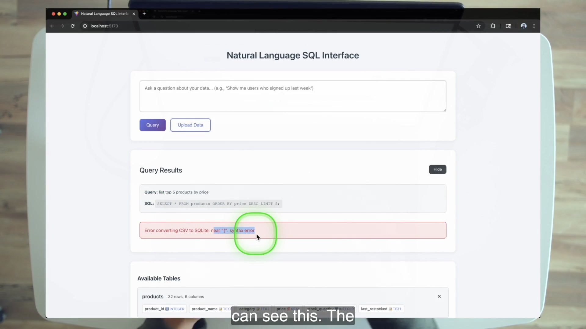
3 · Story
The committed server.py has zero print() calls. Upload, query, schema, and insights handlers catch exceptions into response error data; health reports error status without preserving the exception text; delete converts failures to HTTP errors. The routes differ, but the agentic fact is consistent: no detailed handler trace reaches stdout.
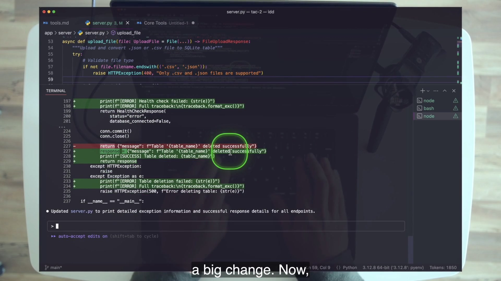
4 · Name
Stdout is not synonymous with “print everything forever.” The course suggests session logs, cleanup, or reduced levels when volume becomes excessive. The requirement is agent-readable evidence at the right abstraction level.
5 · Worked example
The agent receives @app/server/server.py make sure every exception prints all exception details, and make sure every successful response prints before returning. After restart, the same upload produces a traceback. Success prints matter too: an agent needs to distinguish “no error appeared” from “the intended endpoint completed with this result.”
6 · You try
Audit one endpoint without editing it. List: human-visible response, current stdout, ideal success evidence, ideal failure evidence, and secrets that must not be logged. If the agent can only infer success from silence, the design is incomplete.
7 · Fail / fix
Failure: send logs only to a toast, dashboard, or service the agent cannot access; or paste the error into chat yourself. Fix: route concise runtime evidence to a process stream or file the agent can read, then reproduce the event while that stream is in context.
8 · Current practice
9 · Retrieval
Why was the server bad agentic code, and what exactly was the planted bug?
Reveal answer
No detailed success/failure trace reached stdout. server.py:60 turned the filename into orders_(32); pandas created that quoted table, then file_processor.py:26 executed unquoted PRAGMA table_info(orders_(32)), causing SQLite syntax error near (.
10 · Teach-back
Explain why a user-friendly error response can still be agent-hostile. Use the route nuance and the difference between UI feedback and process evidence.
Fix the system before fixing the bug
The lesson’s strongest move is restraint: Dan knows the bug and refuses to repair it until the agent can see it.
1 · Hook
A quick manual sanitizer would make the demo app work. It would also preserve the real defect: future agents would still be blind to runtime failures. Shipping the local fix and leaving the system unchanged optimizes one incident while guaranteeing repeated human intervention.
2 · Picture
1 · Expose
success + error → stdout2 · Observe
server runs inside agent3 · Diagnose
agent names file + line4 · Repair
agent adds sanitizer5 · Validate
upload + tests pass3 · Story
After instrumentation, a fresh agent primes, runs the service with a five-minute timeout, and observes the failing upload. Dan stops the process and asks only, “any issues with the server?” The answer identifies app/server/core/file_processor.py:26, the PRAGMA table_info call, and the unescaped parentheses. The second prompt—“resolve: replace bad chars and escape”—produces the sanitizer.
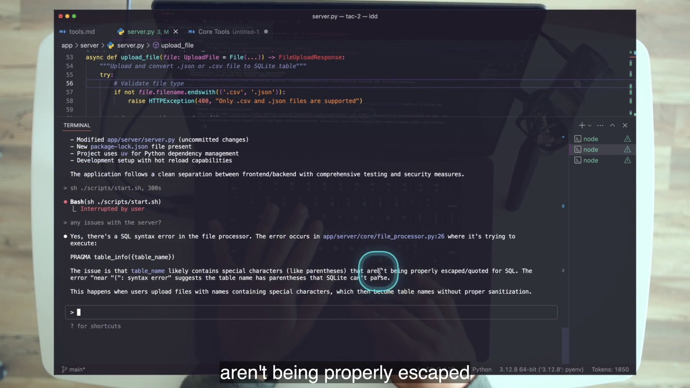
4 · Name
5 · Worked example
The demonstrated sanitizer strips an extension if present, replaces non-alphanumeric/non-underscore characters with underscores, ensures a legal leading character, and supplies a nonempty fallback. orders_(32) becomes orders__32_. The lab grades the behavioral contract, not exact implementation text.
BeforeBrowser error; no handler traceback.
Agent diagnosisPRAGMA call + special characters.
AfterValid table, 32 rows × 7 columns, green tests.
6 · You try
Write the smallest evidence chain that would convince a reviewer the system improved: original error, agent-observed traceback, agent diagnosis, diff, focused sanitizer test, full-suite result, successful upload, and schema row/column count.
7 · Fail / fix
Failure A: fix the bug by hand. Failure B: ask “fix upload” before installing stdout. Fix: make the failure observable, run the process inside the agent, and require the agent to produce and verify its own change. If it still fails, diagnose the next missing lever.
8 · Current practice
9 · Retrieval
What two short prompts did Dan use, and why could they work?
Reveal answer
“Any issues with the server?” and “resolve: replace bad chars and escape.” They worked because detailed stdout existed and the server ran inside the agent’s tool context, with file tools available for repair.
What command/tool setup put the server inside the agent?
Reveal answer
The command was sh ./scripts/start.sh with a 300-second Bash tool timeout.
10 · Teach-back
Tell the debugging story in causal order without saying “the AI figured it out.” Name the three system conditions that made the short prompts sufficient.
Types are information-dense keywords
A precise type name is a search handle, a contract, and a trace through the system.
1 · Hook
When you inherit a feature, you often copy a class name and search the repository. The hits reveal where information is defined, transported, transformed, displayed, and specified. Dan’s reframe is that this familiar technique is a leverage point for fresh agents too.
2 · Picture
DatabaseSchemaResponse→Python model→FastAPI route→TypeScript mirror→client call→spec
3 · Story
In a brand-new instance, Dan asks the agent to show how DatabaseSchemaResponse flows through the app and to detail files, functions, and purpose. A Task subagent searches. The resulting answer names five files and summarizes the flow. The fresh session matters: codebase structure and naming, not conversational memory, carry the trace.
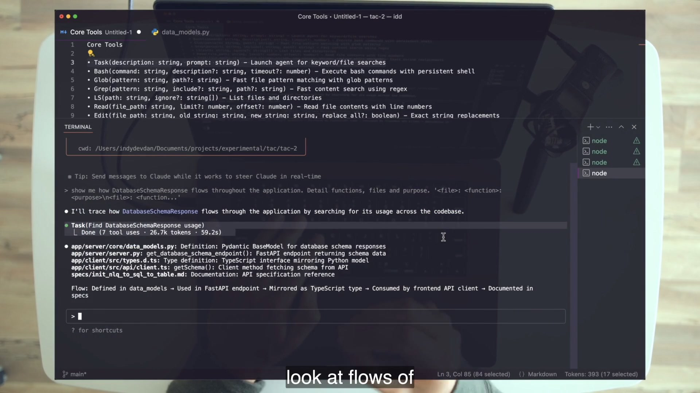
4 · Name
5 · Worked example
app/server/core/data_models.pydefines the Pydantic model.app/server/server.pyuses it in the schema endpoint.app/client/src/types.d.tsmirrors it across the language boundary.app/client/src/api/client.tsreturns it fromgetSchema().specs/init_nlq_to_sql_to_table.mdrecords the intended contract.
The phrase “five files” is precise; some files contain more than one textual occurrence.
6 · You try
Run the trace prompt in a cold session, then independently verify with repository search. For each file, add a verb: defines, serves, mirrors, consumes, specifies. If the agent’s narrative cannot be mapped to exact files, it is not yet evidence.
7 · Fail / fix
Failure: generic names such as DataRequest, or untyped dictionaries passed everywhere. Search becomes noisy or impossible. Fix: use verbose domain names and explicit contracts. Dan calls QueryRequest/QueryResponse merely “not that good,” a prompt to improve deliberately rather than rename for style points.
8 · Current practice
9 · Retrieval
Expand IDK and name the five files in order.
Reveal answer
Information-dense keyword. core/data_models.py → server.py → client/src/types.d.ts → client/src/api/client.ts → specs/init_nlq_to_sql_to_table.md.
10 · Teach-back
Draw the five-file flow from memory and explain what information would be lost if the backend returned an anonymous dictionary.
Architecture is paid on every agent boot
A human learns a messy repository once. Fresh agents repeatedly pay its navigation cost.
1 · Hook
Open app/. The first choice is client or server. That boundary immediately cuts the plausible search space. Small structural decisions compound when agents boot hundreds or thousands of times.
2 · Picture
Client
UI, browser events, API client, TypeScript contracts.
Server
Routes, models, processors, tests, runtime output.
A clean boundary is a precomputed answer to the first navigation question.
3 · Story
Dan inventories a consistency checklist: clear entry points; constant files; explicit types and structures; meaningful IDK names; files below roughly 1,000 lines; agent-facing markdown; separated services; one responsibility per file; and tests mirroring source layout. The repo is small enough to see each decision.
4 · Name
Dan’s antidote is consistency. If a repository is hard for you to navigate, assume it is hard for an agent too.
5 · Worked example
server.pyandmain.tsare clear entry points.file_processor.py,sql_processor.py,llm_processor.py, andinsights.pyname responsibilities.tests/core/test_file_processor.pymirrorscore/file_processor.py.- The largest file,
main.ts, remains 415 lines—below the lesson’s rough ceiling.
6 · You try
Score TAC-2 against the nine checklist items. For every “yes,” cite a file. For every “partial,” describe the navigation cost. Do not refactor; the lesson explicitly tells you to observe now and use later tactics to change with the agent.
7 · Fail / fix
Failure A: “the agent will figure it out,” which means it spends tokens rediscovering accidental structure. Failure B: start a broad manual cleanup the moment you hear the critique. Fix: audit, record gaps, and preserve the evidence for an agent-led refactor lesson.
8 · Current practice
9 · Retrieval
What is the navigation problem, which decision halves this repo, and what is the antidote?
Reveal answer
Fresh agents repeatedly re-explore; the client/server split halves the first search; consistency in names, folders, patterns, and responsibilities is the antidote.
List five architecture checklist items.
Reveal answer
Any five: clear entry points, constants, types/classes, precise IDK names, files under roughly 1,000 lines, agent-facing markdown, separated services, one responsibility per file, mirrored tests.
10 · Teach-back
Explain how one folder boundary saves work on every agent boot. Then name one consistency benefit and one reason not to refactor yet.
Documentation has two audiences of truth
Internal docs explain this codebase. External docs bring third-party knowledge close to the agent.
1 · Hook
Why store API quickstarts locally when search exists? Because repeated web retrieval adds latency, uncertainty, and context drift. A local file makes a stable input available to every agent working in the repository.
2 · Picture
Internal documentation
What this repository is, how it runs, where its parts live.
README.md.claude/commands/prime.mdExternal documentation
How third-party services and APIs behave.
ai_docs/openai_quick_start.mdai_docs/anthropic_quick_start.md3 · Story
The 153-line README contains setup, commands, project structure, routes, security notes, and troubleshooting. /prime reads it at every cold start. The ai_docs/ folder vendors OpenAI and Anthropic quickstarts so planning and implementation can use local references. The earlier install frame shows the agent correcting a failed assumption from repository documentation.
4 · Name
5 · Worked example
Put “run services with scripts/start.sh” in internal documentation. Put an API client quickstart in ai_docs/. Then make /prime read only the internal facts needed by most runs; do not flood every session with every vendor page.
6 · You try
Classify four facts: route inventory, supported Python version, provider authentication syntax, and the reason tests mirror core. Decide which should be loaded on every prime and which should be pulled only for provider work.
7 · Fail / fix
Failure: assume model training data is current repository knowledge, or search for a file the lesson does not ship. Dan mentions the CLAUDE.md convention, but TAC-2 has no CLAUDE.md. Fix: treat the actual README and commands as source truth; never invent a local artifact from a convention.
8 · Current practice
9 · Retrieval
What are the two documentation types and what is ai_docs/ for?
Reveal answer
Internal repository documentation and external third-party documentation. ai_docs/ keeps external references local and agent-readable so every lookup does not require the web.
10 · Teach-back
Give one repo fact and one vendor fact. Explain where each belongs, when it should enter context, and why TAC-2’s lack of CLAUDE.md matters for accuracy.
Tests let the agent correct itself
Generation becomes a loop when the agent can act, run a check, observe failure, and improve.
1 · Hook
Your agent will make mistakes. The useful question is whether it has concrete feedback to detect them. Without tests, the end of code generation is often a confident claim. With tests in context, the claim can be challenged before handoff.
2 · Picture
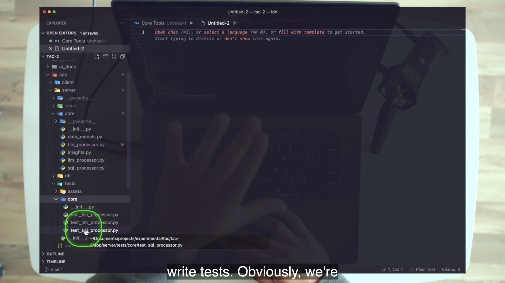
3 · Story
Inside the agent, Dan switches to shell mode and runs cd app/server && uv run pytest. Test output flows into context. The shipped suite contains 621 lines across file, LLM, and SQL processor tests. In the verified baseline, 34 tests pass. That result is evidence the student can reproduce before any change.
4 · Name
5 · Worked example
After creating sanitize_table_name, the agent writes tests for parentheses, a leading digit, and a name made only of invalid characters. It runs the focused test, then the full suite. A normal single added test yields at least 35 passing tests; parametrization can yield more, so grading should require behavior and green output rather than one exact count.
6 · You try
Ask the agent to state the sanitizer’s behavioral contract before writing tests. Require it to identify the original bug case, two boundary cases, and the command that runs the whole suite. Review the plan; let the agent write and run the code.
7 · Fail / fix
Failure: run tests yourself, read the failure, and paraphrase it back. The agent never owns the feedback loop. Fix: make test execution part of the agent’s task and require returned evidence. Dan’s sharper warning is that if you are not writing tests, you are probably vibe coding.
8 · Current practice
9 · Retrieval
Define a closed-loop structure and state Dan’s test warning.
Reveal answer
The agent acts, receives concrete validation feedback, and can correct its work. “If you’re not writing tests, you’re probably vibe coding.”
10 · Teach-back
Explain why stdout and tests are the first two through-agent levers to install. Distinguish runtime visibility from expected-behavior validation.
Climb from plans to templates to ADWs
One large prompt communicates work. A reusable prompt preserves it. Code plus a trigger runs it without you.
1 · Hook
Repeated small prompting feels interactive and productive, but the human remains the scheduler and state carrier. The final three leverage points are an abstraction ladder that progressively removes that repetition.
2 · Picture
Plan→ reviewed for one large job →Template→ reused as a command →ADW→ wrapped in code + fired by a trigger
3 · Story
The 749-line specification bootstrapped the app. Three shipped commands preserve installation, priming, and tool introspection. After starting the services three times, Dan asks the agent to create .claude/commands/start.md containing the course command text. Then he exits the interactive session and runs claude -p "/tools", proving the same reusable prompt can be invoked programmatically and return control to the shell.
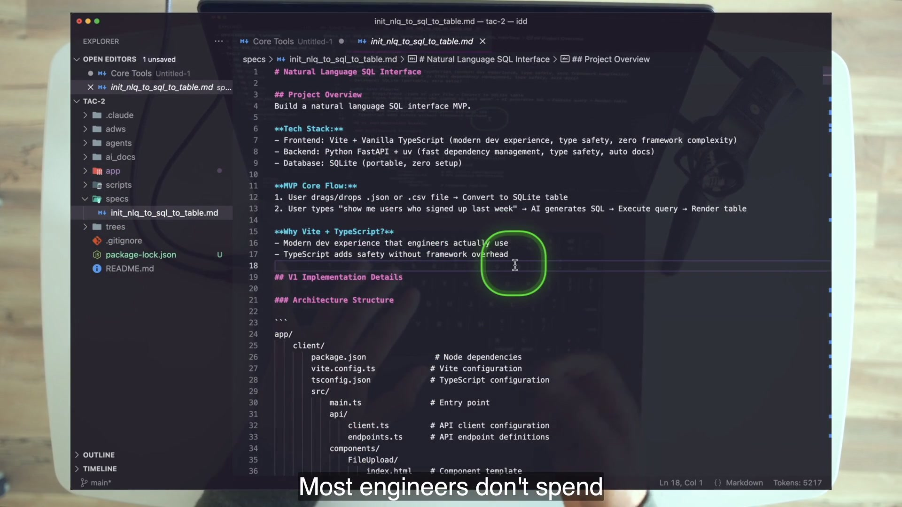
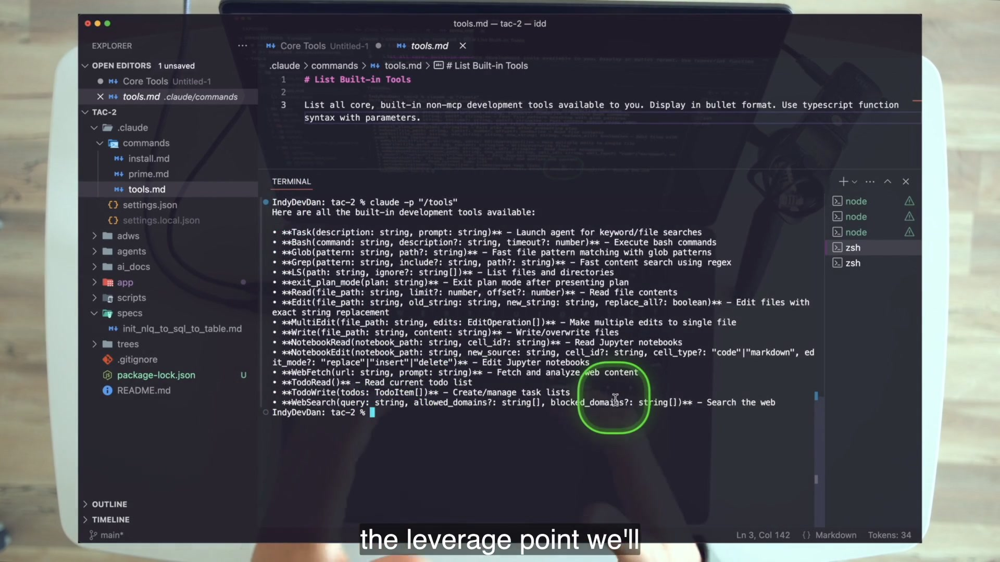
4 · Name
5 · Worked example
install.md is a prompt that executes prime.md before installing dependencies—prompts inside prompts. start.md is not shipped; it is created live after repetition. adws/ and agents/ are empty placeholders in the committed repository. They point toward the course destination but are not evidence of a finished autonomous system.
6 · You try
Find one action you have performed three times in the lab. Write the reusable prompt’s starting state, action, timeout, success evidence, and stop condition. Have the agent create the command file. Then explain what additional wrapper and trigger would be needed before calling it an ADW.
7 · Fail / fix
Failure: hand-type huge plans, keep one-off prompts in private notes, or jump to autonomous compositions before one strong prompt works. Fix: have the agent draft a plan for review; store repeated prompts with the repository; master the primitive before composing it.
8 · Current practice
9 · Retrieval
Give both formulations of plans and the evidence fact.
Reveal answer
Simply, plans are prompts. Accurately, plans communicate massive amounts of work to the agent. The app’s specification is 749 lines and Dan says he did not hand-type it.
State the three-time rule and the command it produced.
Reveal answer
Three times makes a pattern and should trigger automation. Dan created .claude/commands/start.md with the course’s sh ./scripts/start.sh 300s prompt text, enabling /start.
Define an ADW and name its seed mode.
Reveal answer
One or more agentic prompts plus an arbitrary code wrapper plus an autonomous trigger. The seed is programmable mode, demonstrated with claude -p "/tools".
10 · Teach-back
Use “start the app” three times: once as a plan step, once as a reusable template, and once as a hypothetical ADW. Make the trigger difference explicit.
Measure size, attempts, streak, and presence
Without measurement, you cannot tell leverage from luck—or productive oversight from habitual babysitting.
1 · Hook
A feature ships after six corrections. Another ships after one. If you record only “shipped,” both look equal. Dan’s KPIs track the shape of delegated work and the amount of scarce human attention it consumes.
2 · Picture
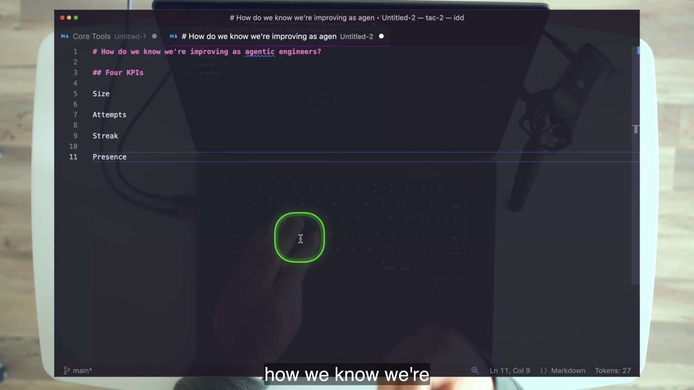
3 · Story
The closing confession reframes the entire lesson: Dan’s visible back-and-forth was still phase-one use of Claude Code and it tanks presence. The course now moves toward programmable mode. The uncomfortable part is releasing constant visibility while retaining architecture, direction, planning, thinking, and engineering.
4 · Name
5 · Worked example
Dictionaries confuse the agent: install types. The repository is hard to explore: improve architecture. You manually read errors: improve stdout. The prompt grows through repeated corrections: plan. A “successful” change hides defects: tests. You repeat the same workflow three times: template it. Each operational symptom maps back to the twelve.
Dan’s streak arithmetic is intentionally rough: five one-shot features outperform five prompts that each need three fixes; the fixer is described as roughly three times slower. The lesson is not a precise productivity study. It is a warning that correction count compounds.
6 · You try
For your next three prompts, log run duration or work scope, post-completion corrections, current one-shot streak, and interventions while the run is active. When the streak breaks, write the missing-lever hypothesis before re-prompting.
7 · Fail / fix
Failure: treat all iteration as bad or celebrate a long run without evidence. Exploratory work can require iteration, and attempts may rise when size rises. Fix: use the metrics as directional diagnostics. Improve the system rather than demanding perfection from the first larger handoff.
8 · Current practice
9 · Retrieval
Name the four KPIs, target directions, and the streak comparison.
Reveal answer
Size up, attempts down toward one, streak up, presence down toward zero. Dan contrasts five one-shots with five prompts needing three fixes each and calls the latter roughly three times slower.
What confession closes the lesson?
Reveal answer
The interactive back-and-forth used throughout was still phase-one mode and hurt presence; the course now shifts toward programmable execution while keeping observability and engineering judgment.
10 · Teach-back
Describe a streak break, name the missing leverage point, and predict which KPI should improve after the fix. Avoid saying only “use a better prompt.”
Graded lab · make the agent see, fix, and verify
Use only a standalone clone of the TAC-2 course codebase. Preserve the original failure, preserve your final diff, and collect evidence at each transition.
Lab map · 100 points
Audit · 10
permissions + routes + baselineReproduce · 15
silent planted failureObserve · 20
stdout inside agentFix + test · 25
sanitizer + green loopTrace · 15
five-file IDKAbstract · 10
/start + claude -pTeach · 5
oral retrievalWhat the grade measures
This is not a sanitizer exercise with agent decoration. A hand-written perfect sanitizer fails the lab because it removes the learning mechanism. The grade follows the causal chain. First, you prove that a human-readable browser error is absent from agent-readable server output. Second, you use the agent to install that output. Third, the agent owns the runtime and derives its diagnosis without an error pasted through the human. Fourth, it makes and tests the repair. Finally, you show that the structural levers—types, commands, programmable mode, and architecture—let a fresh session repeat or explain the work.
/start, headless /tools, architecture audit, and oral retrieval.Keep a simple lab journal with four columns: action, observation, leverage point, and proof path. For example: “uploaded bad CSV” is an action; “browser error but no server trace” is the observation; “standard out” is the missing lever; and the browser plus terminal captures are the proof paths. Later: “agent ran pytest” is the action; “new sanitizer case and full suite green” is the observation; “tests” is the installed lever; and the command output is the proof. This forces every conclusion to attach to evidence rather than hindsight.
Starting-state contract
The most common lab failures are not mysterious agent failures. They are ambiguous starting states. If an outside server still owns the ports, the inside-agent start exits and produces the wrong lesson. If a stale database remains, the pre-fix table can coexist with the sanitized table and confuse schema verification. If .env is absent, the start script exits with its own useful stdout message. If the five-minute timeout expires, the tool behaved as requested. Record the state before each checkpoint: which process owns the ports, which database file exists, which diff is present, and which session is fresh.
Lab 0 · Standalone setup and audit · 10 points
- Clone the course repository into a disposable standalone directory and enter it. The course URL is
https://github.com/disler/tac-2.git. - Audit
.claude/settings.json. Record nine allowed Bash patterns—mkdir, uv, find, chmod, mv, grep, npm, ls, cp—plus Write. Record the three denies: force-push long form, force-push short form, and recursive force removal. - From
app/server, runuv sync --all-extrasanduv run pytest. Capture the baseline: 34 passed in the verified course state. Fromapp/client, runnpm install. - Copy
app/server/.env.sampleto.env. The core upload, schema, health, and test work is deterministic without a live provider key. Add at least one real key only if you choose to run the optional natural-language query; never include it in evidence. - Run
./scripts/start.shat repository root. Verify frontend on port 5173, backend on 8000, and API docs at 8000/docs. Record all six routes: upload, query, schema, insights, health, and delete table.
Lab 1 · Reproduce and explain the silent failure · 15 points
- Upload
app/client/public/sample-data/orders_(32).csv. Capture the browser error:Error converting CSV to SQLite: near "(": syntax error. - Capture the corresponding server terminal. Confirm there is no detailed handler traceback or success trace.
- Explain the actual chain:
server.py:60derivesorders_(32); pandas creates/replaces the oddly named table atfile_processor.py:22; unquotedPRAGMA table_info(orders_(32))fails at line 26. - Define “bad agentic code” in your own words without claiming every route handles errors identically. The shared problem is missing detailed stdout evidence.
Lab 2 · Install the stdout lever · 20 points
- Start a fresh agent at repository root and run
/prime. Ask it to instrument every endpoint’s success and failure path with useful stdout, including exception details/traceback. Grade readable evidence and secret hygiene, not exact bracket formatting. - Review the diff. Restart, reproduce the upload, and prove the error now appears in server output.
- Stop the outside server so ports 5173 and 8000 are free. In a fresh primed agent, ask it to run
sh ./scripts/start.shwith a 300-second Bash tool timeout. The comma in Dan’s spoken prompt is not shell syntax; the command and timeout are separate tool-call properties. - Reproduce the upload while the process is inside the agent. Stop the run and ask
any issues with the server?. The answer must independently cite the PRAGMA path and special characters. You may not paste or paraphrase the error.
Lab 3 · Repair and close the test loop · 25 points
- Prompt
resolve: replace bad chars and escape. Review the agent’s sanitizer for four behaviors: extension handling, invalid-character replacement, legal leading character, and nonempty fallback. - Have the agent write focused tests covering a parenthesized name, a leading digit, and a name made only of invalid characters. It must run the focused tests and then
uv run pytestitself. - Stop services. If
app/server/db/database.dbexists, preserve it by moving it todatabase.before-lab.db. Do not delete it. The stale table exists because pandas created it before PRAGMA failed. - Restart inside the agent and upload the file again. Verify a valid identifier (the video implementation yields
orders__32_), 32 rows, and 7 columns. UseGET /api/schemafor a deterministic keyless check. - Capture the final full-suite result: at least 35 tests pass, possibly more if the new cases are parametrized.
Lab 4 · Trace structure and abstract repetition · 25 points
- Open a brand-new agent with zero conversation history. Ask it to trace
DatabaseSchemaResponsethrough files, functions, and purpose, using a structured output format. - Independently search the repository. Verify the same five files: Python model, server route, TypeScript types, API client, and spec. Explain each role.
- After starting the server at least three times, tell the agent to create
.claude/commands/start.mdwith the course’s prompt textsh ./scripts/start.sh 300s. Restart the agent and verify/startfrom a cold session. Treat the 300s text as command-parser input, not proof thatstart.shaccepts a duration argument. - Exit to the shell and run
claude -p "/tools". Capture the returned tool list and shell prompt. Explain why this is only an ADW seed: there is not yet an arbitrary wrapper plus autonomous trigger. - Optional S5 architecture audit: score TAC-2 against all nine checks from the architecture section, cite real paths for every score, and write the gap list. Do not refactor; this drill is read-only.
Final rubric and troubleshooting
Pass evidence
Every item required.
- 10/10 audit facts
- Exact planted failure and line chain
- Agent-observed stdout, no human relay
- Valid 32×7 upload and green suite
- Verified five-file type trace
- Cold
/startand headless tool list - Final diff preserved for review
Common stalls
Diagnose the starting state.
- Outside server still owns ports
- 300-second run expired normally
.envmissing so startup exits- Stale table remains in old DB
- Type trace costs substantial tokens
- Optional query lacks a valid key
Cumulative mastery · retrieve, diagnose, transfer
Close the chapter and answer aloud before opening any disclosure. Recognition is not mastery.
Round 1 · Framework
1. Reconstruct the SDLC and map one leverage point to each node.
Reveal answer
Plan, code, test, review, document. Example mapping: plans → plan; tools → code/action; tests → test; stdout → review evidence; docs → document/next context.
2. Reconstruct the 4+8 map without looking.
Reveal answer
In-agent: context, model, prompt, tools. Through-agent: stdout, types, documentation, tests, architecture, plans, templates, ADWs.
3. Why is the model not the first diagnosis in the planted bug?
Reveal answer
The same model succeeds after runtime visibility reaches it. Standard out and tool context, not reasoning capacity, were the demonstrated bottleneck.
Round 2 · Causal demo
4. Explain the exact filename-to-PRAGMA failure chain.
Reveal answer
The upload route derives orders_(32); pandas creates the table; unquoted PRAGMA table_info(orders_(32)) treats parentheses as syntax and fails.
5. Why are success logs part of the fix?
Reveal answer
They distinguish verified completion from mere absence of visible failure and give the agent top-level evidence about the path that ran.
6. What evidence proves the fix rather than merely describes it?
Reveal answer
Agent-observed traceback and diagnosis, reviewed diff, focused tests, full green suite, successful upload, and schema showing a valid table with 32 rows and 7 columns.
Round 3 · Navigation and loops
7. How do types, architecture, docs, and tests work together on a cold boot?
Reveal answer
Docs establish orientation; architecture narrows search; IDK types trace the feature; mirrored tests supply expected behavior and executable feedback.
8. What is the difference between an agent-readable log and a closed loop?
Reveal answer
A log is an observation. A closed loop connects observation to a check and a next corrective action performed by the agent.
9. Why is “do not refactor yet” part of architecture mastery?
Reveal answer
The lesson trains diagnosis and awareness. Premature manual refactoring violates the course’s move toward agent-led systematic change and expands scope before the current levers are learned.
Round 4 · Abstraction and measurement
10. Distinguish a plan, template, and ADW in one sentence each.
Reveal answer
A plan communicates one large body of work. A template makes an agentic prompt reusable. An ADW composes prompt(s) in code and launches them through an autonomous trigger.
11. Attempts rose when size rose. Is the system necessarily worse?
Reveal answer
No. Larger delegation can temporarily increase attempts. Diagnose the failures, install missing levers, and watch whether attempts fall at the new size.
12. What does presence measure that run duration does not?
Reveal answer
How much live human guiding, watching, and correction the run requires, not merely how long the compute runs.
TAC-2 glossary
Use these terms as diagnostic instruments, not slogans.
- Phase-two SDLC
- Plan, code, test, review, document—the durable five-node framework TAC progressively augments and automates.
- Adopt Your Agent’s Perspective
- Tactic #2: judge the task from the observations, instructions, tools, structures, and feedback available to the agent.
- In-agent leverage
- Context, model, prompt, and tools—the Core Four that are always part of an agent run.
- Through-agent leverage
- External codebase/workflow structures whose information or feedback flows through the agent: stdout, types, docs, tests, architecture, plans, templates, ADWs.
- Standard out
- Command and application output available to the agent as direct runtime evidence.
- Bad agentic code
- Code whose operation may be understandable to a human UI user but does not expose enough usable evidence for an agent to diagnose and verify.
- System-first debugging
- Improve observation and validation conditions before asking an agent to repair the immediate defect.
- IDK
- Information-dense keyword: a precise structural name that lets humans and agents trace information through a repository.
- Agent navigation problem
- The repeated cost every fresh agent pays to rediscover the repository’s structure and conventions.
- Internal documentation
- Repository-specific truth: setup, structure, commands, decisions, and operating instructions.
- External documentation
- Third-party knowledge, often vendored locally so agents can retrieve it without repeated web requests.
- Closed-loop structure
- A sequence in which agent action produces feedback the agent can evaluate and use for correction.
- Plan
- Simply a prompt; accurately, the way massive work is communicated to an agent for review and execution.
- Template
- A reusable, embeddable agentic prompt such as a repository command.
- Three-time rule
- When an action repeats three times, treat the pattern as a candidate for automation.
- ADW
- AI Developer Workflow: one or more agentic prompts wrapped in arbitrary code and launched autonomously by a trigger.
- Size
- The amount of meaningful work handed off per prompt or run; target direction is up.
- Attempts
- Post-completion corrections needed to reach success; target direction is down toward one.
- Streak
- Consecutive one-shot successful runs; target direction is up.
- Presence
- Live human attention spent guiding, watching, and correcting a run; target direction is down toward zero where appropriate.